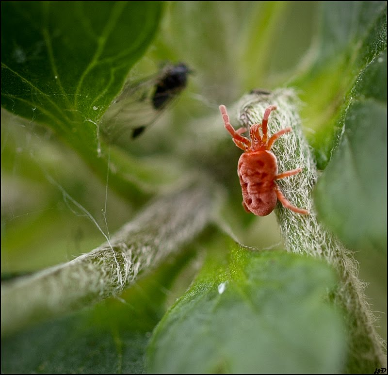

<div class="modal fade" id="tungauMerah" tabindex="-1" role="dialog" aria-labelledby="myModalLabel" aria-hidden="true">
                                <div class="modal-dialog">
                                    <div class="modal-content">
                                        <div class="modal-header">
                                            <button type="button" class="close" data-dismiss="modal" aria-hidden="true">&times;</button>
                                            <h4 class="modal-title" id="myModalLabel">Tungau Merah</h4>
                                        </div>
                                        <div class="modal-body">
                                            
                                            <p> </p>
											Nama latin : <em>Tetranychus cinnabarinus</em><br>
                                            Jenis serangga : Tungau<br>
                                            Bagian tanaman yang diserang : Daun<br>
                                            Fase tanaman yang diserang : Tanaman muda (0 - 10 hari setelah tanam), Vegetatif (11 - 30 hari setelah tanam)<br>
                                            Tempat peletakan telur : Bawah daun<br>
                                            Ukuran tubuh nimfa / larva : 0.1 - 0.4 mm<br>
                                            Ukuran tubuh imago : 0.5 mm<br>
                                            Warna tubuh imago : Merah<br>
                                            Fase metamorfosis : Tidak Sempurna<br>
                                            Fase hama yang menyerang tanaman : Imago dan Nimfa / Larva<br>
                                            Gejala : Muncul bercak dan daun menguning<br>
                                            <p> </p>
                                            Cara Pengendalian :<br>
                                            <ul>
                                            <li>Tanam serempak</li>
                                            <li>Pemantauan secara rutin, apabila populasi tinggi semprot dengan akarisida</li>
                                              
                                            </ul>
											<p> </p>
											Jenis Insektisida :<br> 
											<ul>
											<li>Kelthene 200 EC</li>
											<li>Omite</li>
											</ul>
                                        </div>
                                        <div class="modal-footer">
                                            <button type="button" class="btn btn-default" data-dismiss="modal">Close</button>
                                            
                                        </div>
                                    </div>
                                    <!-- /.modal-content -->
                                </div>
                                <!-- /.modal-dialog -->
                            </div>